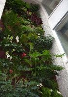

 Essentially a living wall is a vertically grown plant community which mimics the growth mode of plants on a natural rock wall. In such situations, a continuous seep of moisture flowing over the surface supports a varied population of mosses, ferns, and other companion plants.
Living Walls, or Biowalls, have been conceived and refined independently in several different places, but are based upon similar principles.
An engineered living wall uses the same principle, anchoring plants into a lightweight synthetic mat through which water and nutrients are trickled. We all know that indoor plants have been proven to help remove airborne toxins from office and home environments, but the biowall amplifies this aspect because the roots of the plants are colonised by algae and beneficial microorganisms.
Air passing over the roots is cleansed by the web of life, re-oxygenated, and ionized. The ionization is what makes sitting by a water fountain or waterfall especially relaxing, and a living wall provides the same function when installed indoors.
Biowalls are divided into active and passive systems. An active system is commonly backed by a fan which forces air through the living root mat, while passive systems rely on the presence of the plants and movement of the water to provide their benefits. Either way, a living wall offers beauty, relaxation and cleaner air.
Photo by Renée Stephen, 2005.